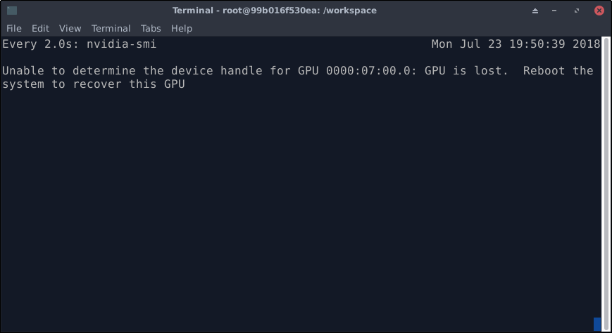
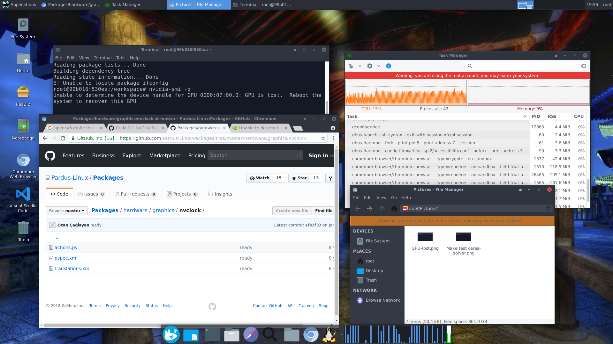

Report for peroidically hibernation of Nvidia DGX 230 on Aug. 11, 2018
| Date: | Aug 11, 2018 |
|---|---|
| Last Updated: | Aug 11, 2018 |
| Categories: | |
| Tags: |

Contents
Problem statement
- What is it?: We assume that this problem is caused by the hibernation of the graphics cards.
- How does it happen?: This problem occurs periodically. Every week it would occur for about once. It is not due to some special applications, because even when there is no burden on GPU, it still happens.
- What does it cause?: Here are some phenomenons when the problem appears:
- Cannot turn on the screen: The screen of DGX would be kept off. Whatever we do (like move the mouse or type something with the keyboard), the screen would not be turned on. However, we could still get access to the device by remote accessing (like using Putty).
- Cannot use nvida apps: Like
nvidia-smi,nvidia-docker run. It would return an error likeGPU is lost. However, some commands are still accessible, likenvidia-docker images. - Cannot exit from the container: If we are running a container by docker when the problem occurs, we could still use the container normally (except some processes that need GPU). But if we type
exitinside the container, the terminal would be freezed. - Process on GPU would be freezed: If we are running any process that needs the GPU when the problem occurs, that process would be freezed. We could not terminate it by
terminateorkill. - A core would be fully occupied (not verified): It seems that when this problem occurs, one CPU core (among 40 logical cores) would be fully occupied. But we could not find which application is occupying it.
- How to solve it?: Now every time it happens, we need to restart the machine and everything would be recoverd. But after about one week, it happens again.
- Why we need to solve it?: Many of our programs need to be runned for a long time (several days), we could not take the risk of restarting our testing program due to the hibernation.
Problem records
Screenshots
This problem could be detected by running nvidia-smi. For example, if we are running watch nvidia-smi, we could find this problem if the returned message is changed like this:
| nvidia-smi tells us that GPU is lost |
|---|
|  |
Here we show a screenshot when the problem occurs. This screen shot is captured inside the container, i.e. a VNC remote desktop provided by the container. We are running a testing program that only uses CPU, so we could see that the CPU is occupied and that program keeps running normally. However we could not get access to the GPU now.
| A whole screenshot when the problem happens |
|---|
|  |
Nvidia bug reports
Run this command outside the docker (by remote accessing, we have mentioned that although we could not turn on the screen, we could still get access to the Bash by remote accessing), then we would get a full record of the hardware:
$ sudo nvidia-bug-report.sh
To help us detect what happens and what makes it different when the problem occurs, we run the command for twice. One is during the hibernation and the other is in the normal state (where the GPU is working correctly). The comparison of two reports is shown as follows:
The left side is the report of a normal state, the right one is the report when the problem happens. You could download the comparison of the reports by this link:
Or you can use the following links to download the original txt reports directly:
Nvidia healthy report
Follow the instructions here:
We use this command to collect the system status firstly:
$ sudo nvsysinfo
This command would dump a file with a name like /tmp/nvsysinfo-timestamp.random-number.out. No more information is given.
Then, call this command,
$ sudo nvhealth &> nvhealth.log
This command would also dump a file with a name like /tmp/nvhealth-log.random-string.jsonl. And the printed information would be dumpled into nvhealth.log.
We have run these commands in both bug state and normal state respectively. The comparison of the nvhealth.log is shown as follows:
You can only download the comparison report here:
We have collected all dumped files in a zipped file. The file name table is as follows:
| Status | System information | Healthy report |
|---|---|---|
| with-bug | nvsysinfo-201808141356.4n835u.out | nvhealth-log.kE3XdxPBlo.jsonl |
| normal | nvsysinfo-201808141425.Gn7yxn.out | nvhealth-log.q4DASkL1aD.jsonl |
You could download the zipped file here: